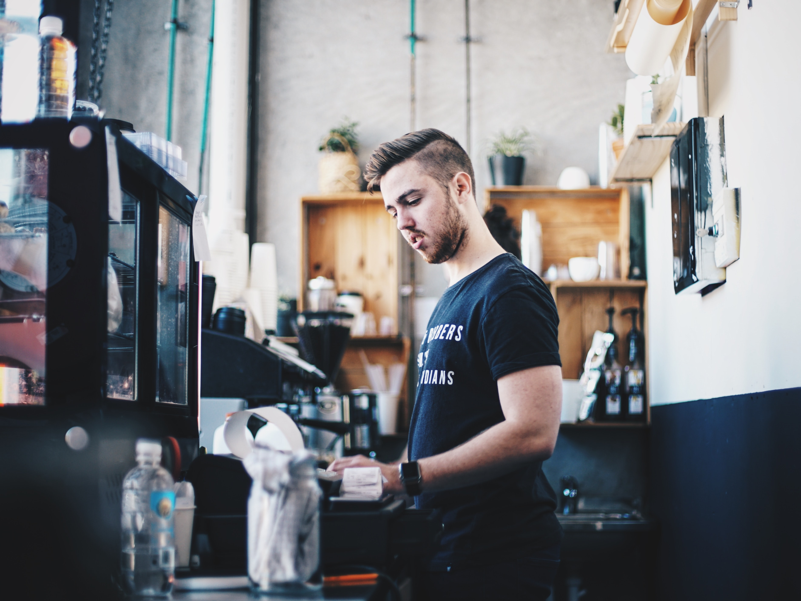
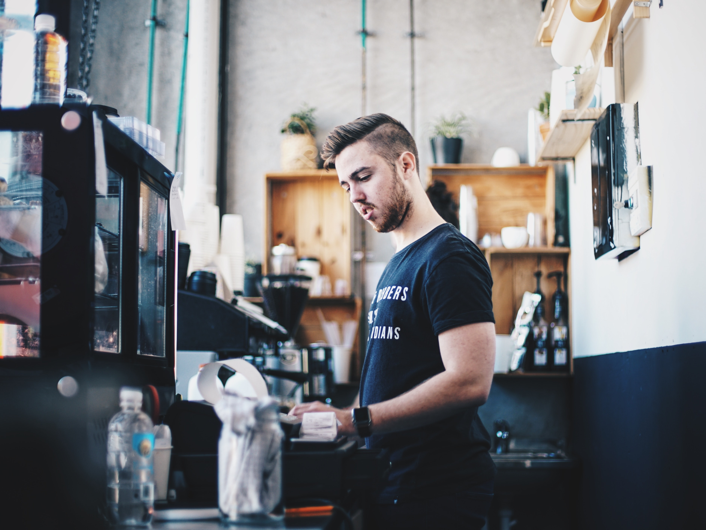

Meet Our Employees
We Make The Best Coffee In The Bay
Each of our employees are well-trained, and supported by a month-long Barista Training Program. To deliver a good coffee to delight our customers, we are always responsible to every cup of coffee and make the best used of each coffee beans and ingredients.
Long History, Profound Taste
Back to 1990, Joffy's cafe was first grounded in Berkeley, CA. We have well-liked taste coffee since then, and it has last 40 years. Each of our employees loves Joffy's Cafe and sees here as their home. We are a coffee shop, also, we are a welcomed, and warm family.
More About Our Story → 
